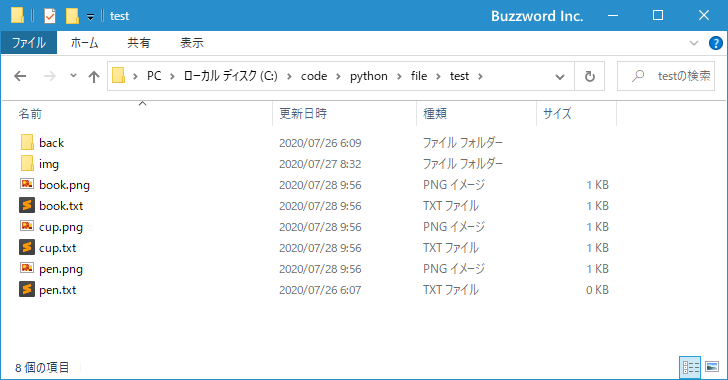
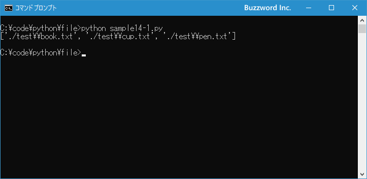
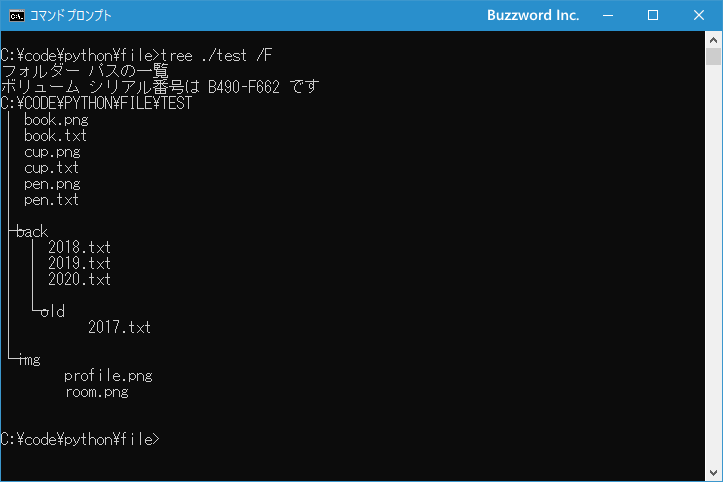
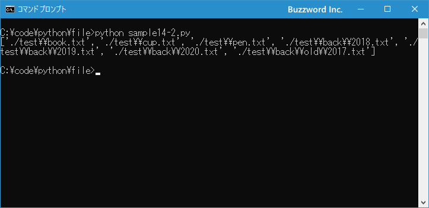
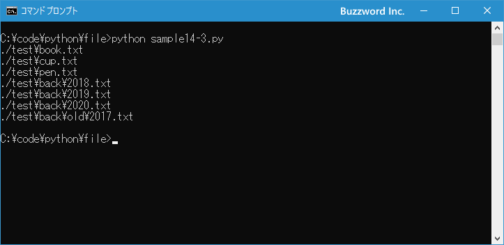

条件に一致するファイルやディレクトリの一覧を取得する
Python の glob モジュールで用意されている glob 関数を使って、指定した条件に一致するファイルやディレクトリの一覧を取得する方法について解説します。
※ pathlib モジュールを使って条件に一致するファイルやディレクトリの一覧を取得するには「条件に一致するファイルやディレクトリの一覧を取得する(pathlibモジュール)」を参照されてください。
条件に一致するファイルやディレクトリを取得する
指定した条件に一致するファイルやディレクトリの一覧を取得するには glob モジュールで用意されている glob 関数を使用します。
glob.glob(pathname, *, recursive=False)
1 番目の引数に指定したパスとマッチするファイルやディレクトリが要素として追加されたリストを取得します。この時、パスには次の特殊な文字を指定することができます。
* 0文字以上の任意の文字 ? 1文字の任意の文字 [abc] 括弧の中のいずれかの文字
それぞれ使い方を見ていきます。
*:0文字以上の任意の文字
* は 0 文字以上の任意の文字とマッチします。例えばパスとして *.txt と指定した場合は a.txt や memo.txt など 0 文字以上の任意の文字列＋'.txt' と一致するファイルやディレクトリの一覧を取得できます。
下記は末尾が .txt で終わるファイルおよびディレクトリの一覧を取得します。
import glob
for name in glob.glob('./test/*.txt'):
print(name)
>> ./test\book.txt
>> ./test\cup.txt
>> ./test\pen.txt
下記は b から始まるファイルおよびディレクトリの一覧を取得します。
import glob
for name in glob.glob('./test/b*'):
print(name)
>> ./test\back
>> ./test\book.png
>> ./test\book.txt
?:1文字の任意の文字
? は 1 文字以上の任意の文字とマッチします。例えばパスとして ?.txt と指定した場合は a.txt や b.txt など 1 文字以上の任意の文字列＋'.txt' と一致するファイルやディレクトリの一覧を取得できます。 1 文字ではない abc.txt などにはマッチしません。
下記は 3 文字の任意の文字で始まり .txt で終わるファイルおよびディレクトリの一覧を取得します。
import glob
for name in glob.glob('./test/???.txt'):
print(name)
>> ./test\cup.txt
>> ./test\pen.txt
[abc]:括弧の中のいずれかの文字
[] は括弧の中に記述した文字のいずれか 1 文字とマッチします。例えばパスとして 199[789].txt と指定した場合は 1997.txt や 1998.txt や 1999.txt と一致するファイルやディレクトリの一覧を取得できます。 1 文字ではない abc.txt などにはマッチしません。
また [3-6] や [a-e] などのようにハイフンを記述することで文字の範囲を指定することができます。 [3-6] は [3456] と書いた場合と同じですし、 [a-e] は [abcde] と書いた場合と同じです。
下記では、最初に a から e までの文字で始まり任意の文字が続いたあと .txt で終わるファイルおよびディレクトリの一覧を取得し、次に c から z までの文字で始まり任意の文字が続いたあと .txt で終わるファイルおよびディレクトリの一覧を取得します。
import glob
for name in glob.glob('./test/[a-e]*.txt'):
print(name)
>> ./test\book.txt
>> ./test\cup.txt
for name in glob.glob('./test/[c-z]*.txt'):
print(name)
>> ./test\cup.txt
>> ./test\pen.txt
特殊な文字を文字として扱う
* ? [] は glob 関数の中では特別な意味を持ちますが、これらの文字を単なる文字として扱い場合には [] で囲んで記述します。例えば * を 0 文字以上の任意の文字ではなく、文字として * と一致させたい場合は [*] と記述します。
それでは簡単なサンプルプログラムを作って試してみます。テキストエディタで次のように記述したあと、 sample14-1.py という名前で保存します。
import glob
print(glob.glob('./test/*.txt'))
プログラムと同じディレクトリの中に test という名前のディレクトリがあり、 test ディレクトリの中に次のようにファイルとディレクトリが含まれています。

その後で、次のように実行してください。
python sample14-1.py

指定したパスとマッチするファイルとディレクトリの一覧を取得しました。
サブディレクトリも含めて一覧を取得する
glob 関数の引数で recursive=True を指定すると、特殊文字として ** が使用できるようになります。
glob.glob(pathname, *, recursive=False)
パスの中で ** を使用すると、すべてのファイル、 0 個以上のディレクトリとサブディレクトリにマッチするようになります。例えばパスとして ./**/*.txt と指定した場合は a.txt や memo.txt など カレントディレクトリのファイルの他に、 ./doc/b.txt や ./doc/back/2020/report.txt などサブディレクトリにあるファイルも対象となります。
import glob
for name in glob.glob('./test/**/*.txt', recursive=True):
print(name)
>> ./test\book.txt
>> ./test\cup.txt
>> ./test\pen.txt
>> ./test\back\2018.txt
>> ./test\back\2019.txt
>> ./test\back\2020.txt
>> ./test\back\old\2017.txt
サブディレクトリを再帰的に検索して条件に一致するファイルを取得します。
それでは簡単なサンプルプログラムを作って試してみます。テキストエディタで次のように記述したあと、 sample14-2.py という名前で保存します。
import glob
print(glob.glob('./test/**/*.txt', recursive=True))
プログラムと同じディレクトリの中に test という名前のディレクトリがあり、 test ディレクトリの中に次のようにファイルとディレクトリが含まれています。

その後で、次のように実行してください。
python sample14-2.py

サブディレクトリも含めて指定したパスとマッチするファイルとディレクトリの一覧を取得しました。
条件に一致するファイルやディレクトリのすべてが含まれるリストではなくイテレータを取得する
glob 関数は条件に一致するすべてのファイルやディレクトリが含まれるリストを結果として返しますが、リストを返す代わりに条件に一致するファイルやディレクトリに順番にアクセスできるイテレータを取得することができます。 glob 関数の代わりに iglob 関数を使用します。
glob.iglob(pathname, *, recursive=False)
リストではなくイテレータを返す以外は glob 関数と使い方は同じです。
実際には次のように記述します。
import glob
for name in glob.iglob('./test/**/*.txt', recursive=True):
print(name)
>> ./test\book.txt
>> ./test\cup.txt
>> ./test\pen.txt
>> ./test\back\2018.txt
>> ./test\back\2019.txt
>> ./test\back\2020.txt
>> ./test\back\old\2017.txt
非常に数多くのファイルやディレクトリが一致するような場合には、すべての結果をまとめて取得するのではなく都度取得するイテレータを使ったほうが実行環境への負担は少なくなります。
それでは簡単なサンプルプログラムを作って試してみます。テキストエディタで次のように記述したあと、 sample14-3.py という名前で保存します。
import glob
for name in glob.iglob('./test/**/*.txt', recursive=True):
print(name)
プログラムと同じディレクトリの中に test という名前のディレクトリがあり、 test ディレクトリの中に次のようにファイルとディレクトリが含まれています。

その後で、次のように実行してください。
python sample14-3.py

サブディレクトリも含めて指定したパスとマッチするファイルとディレクトリを順に取得しました。
-- --
Python の glob モジュールで用意されている glob 関数を使って、指定した条件に一致するファイルやディレクトリの一覧を取得する方法について解説しました。
( Written by Tatsuo Ikura )

著者 / TATSUO IKURA
初心者～中級者の方を対象としたプログラミング方法や開発環境の構築の解説を行うサイトの運営を行っています。